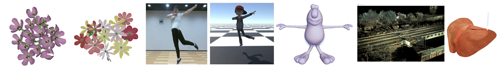

Dr. Junxuan Bai
白隽瑄
Ph.D in Computer Science
Research Affiliate
Institute of Artificial Intelligence in Sports (IAIS)
Capital University of Physical Education and Sports (CUPES)
 https://orcid.org/0000-0002-7941-0584
https://orcid.org/0000-0002-7941-0584http://BesucherzählerKostenlos.com

Short Bio
I am a lecturer at the Institute of Artificial Intelligence in Sports (IAIS), Capital University of Physical Education and Sports (CUPES). Before joining CUPES, I was a researcher at China Mobile Research Institute (CMRI). I received my Ph.D. in computer Science in 2021 from State Key Laboratory of VR Technology and Systems, Beihang University.
My research interests include 3D Human Motion, Character Animation, Human Emotion, Virtual Surgery and all other relevant topics in Computer Graphics and Virtual Reality. Currently, I'm focusing on topics in human motion and sports.
Advertisement: IAIS is looking for high-level talents. Please see the Link for more information.
News
[2023-07] Our papers, "KD-Former: Kinematic and Dynamic Coupled Transformer Network for 3D Human Motion Prediction" is published on Pattern Recognition. The information can be seen at this link.
[2023-01] I was selected into "Young Elite Scientist Sponsorship Program by BAST".
[2022-08] I changed jobs, from CMRI to CUPES. Another name for CUPES is Beijing Institute for International Olympic Studies, which was established ahead of the 2022 Beijing Winter Olympics.
[2022-02] Our papers, "Attribute-Decomposable Motion Compression Network for 3D MoCap Data" will be presented at The Data Compression Conference (DCC) 2022. The video explanation can be found at here.
[2021-08] Our papers, "Human Motion Synthesis and Control via Contextual Manifold Embedding" and "3D-CariNet: End-to-end 3D Caricature Generation from Natural Face Images with Differentiable Renderer", are accepted by Pacific Graphics 2021 (short paper).